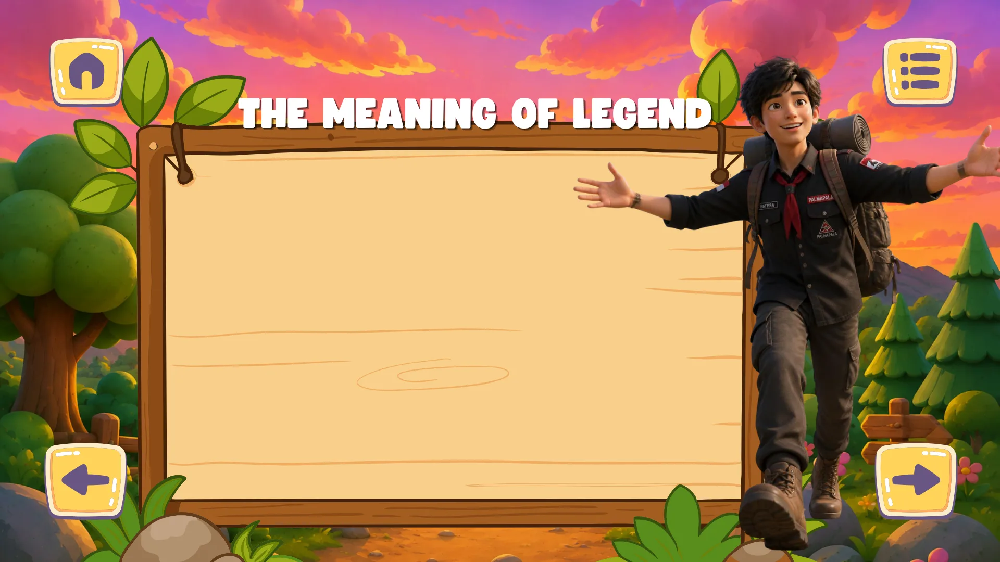
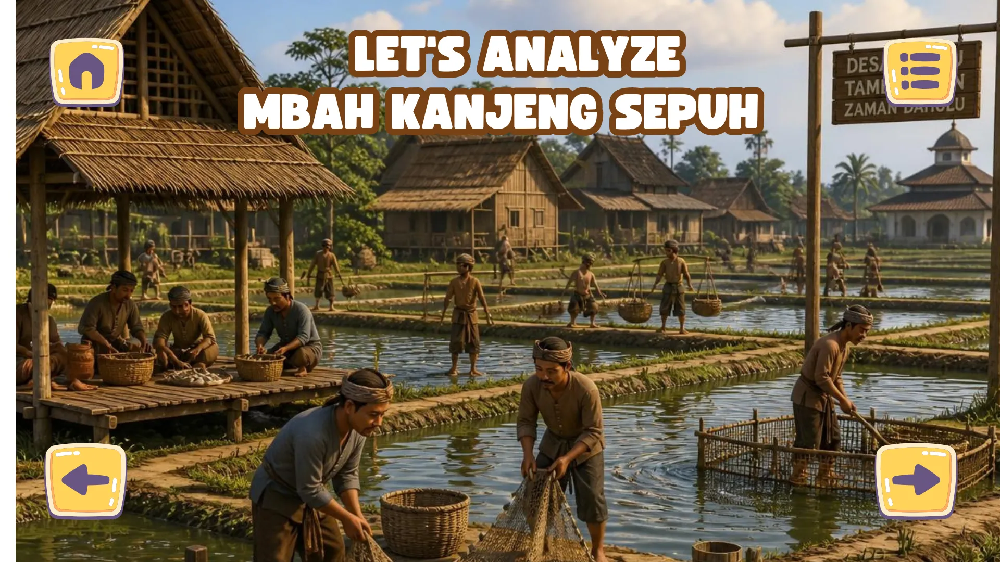
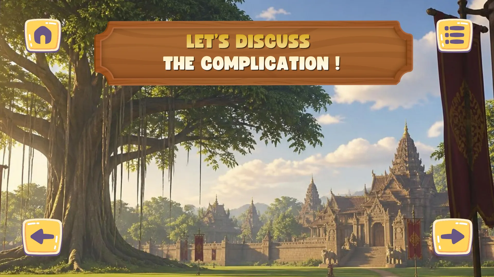
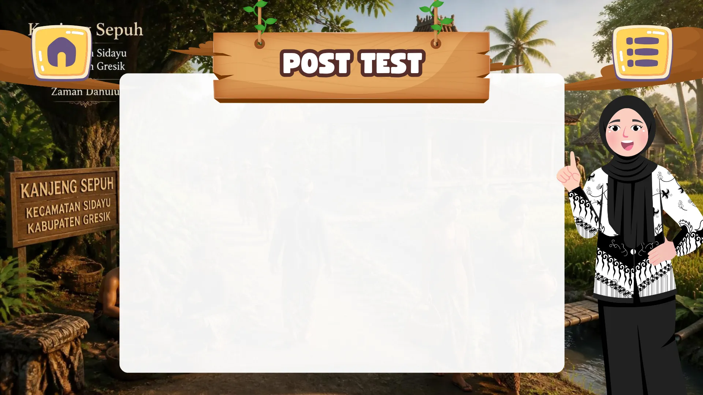
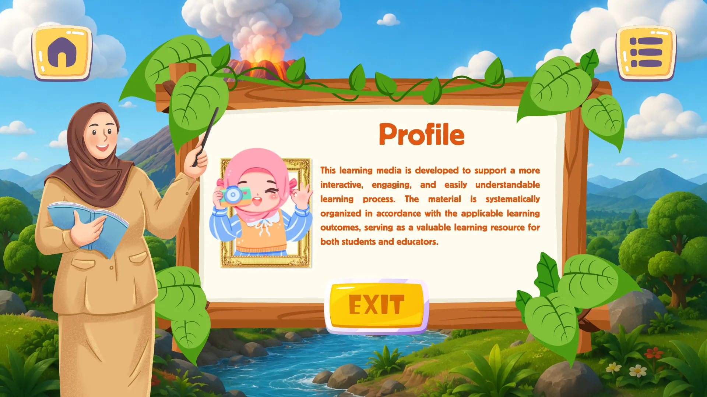

Loading pretest questions...
Pretest Evaluation Results
Diagnostic pretest score recorded. Proceed to explore the learning modules.



A type of narrative that tells notable figures, places, or events believed by a local community, often blended with mythical or heroic elements.
To entertain readers through engaging narrative storytelling.
The story preserves the heritage through local history, beliefs, and cultural identity across generations.


Raden Adipati Suryodiningrat / Kanjeng Sepuh, leader of Sedayu.
Historical setting in the early nineteenth century (Sedayu Regency era).
Setting in the Duchy of Sedayu on the northern coast of East Java.
Introduces external or internal disruption—such as tyranny, drought, war, or moral tests—that upsets the peace.
Details deliberate actions, moral courage, strategy, or deeds through which the crisis is solved.
An evaluative closing stating the moral lesson, legacy, or enduring physical relics.

Key linguistic devices in narrative texts:
How did the legend story of Sang Rojo Pandito (Mbah Kanjeng Sepuh) begin?
The Legend of Sang Rojo Pandito

Coercive taxation and monopolistic pressure imposed by Dutch colonial authorities on indigenous merchants.
A severe regional drought triggering violent agricultural disputes over scarce irrigation across the Tuban–Lamongan border.

Meru Roof Apex
The three-tiered top structure symbolizing the sacred mountain.

Narrative & Comprehension Evaluation
Loading post-test question...
| Rank | Student Name | Pretest | Post-test | Gain (+Δ) | N-Gain |
|---|

Protagonist
The main or central character in a story, play, or narrative.
Tokoh utama dalam cerita naratif.
"Kanjeng Sepuh is the benevolent protagonist of the legend."

Details
Description text.